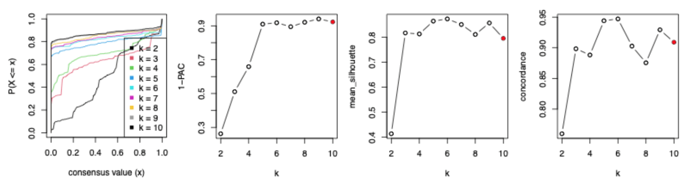
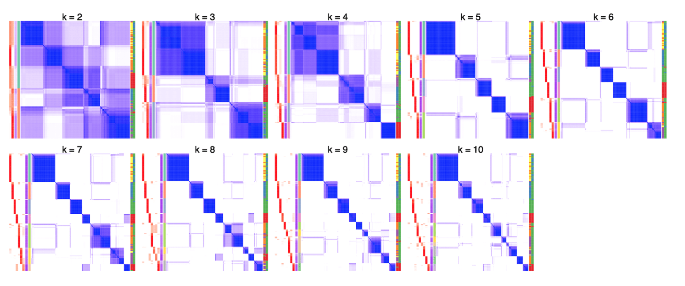
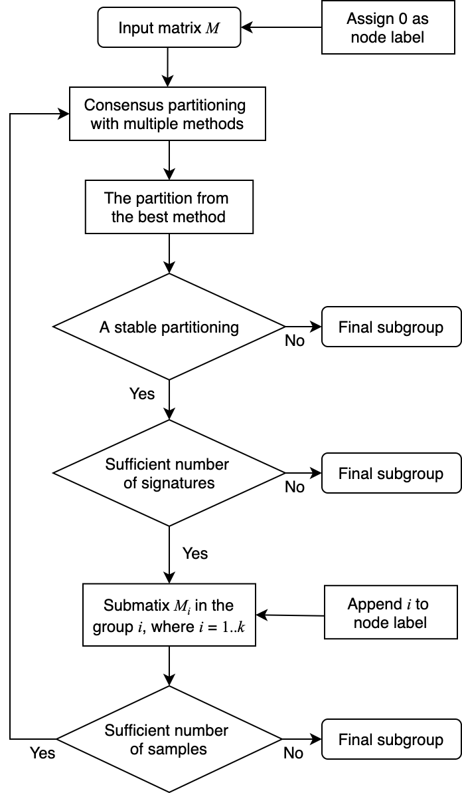
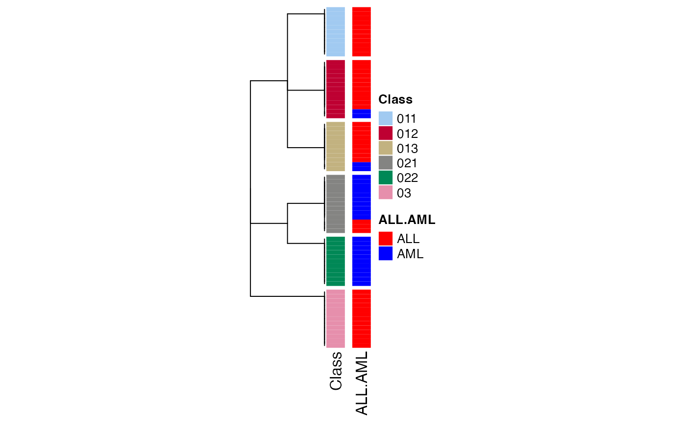
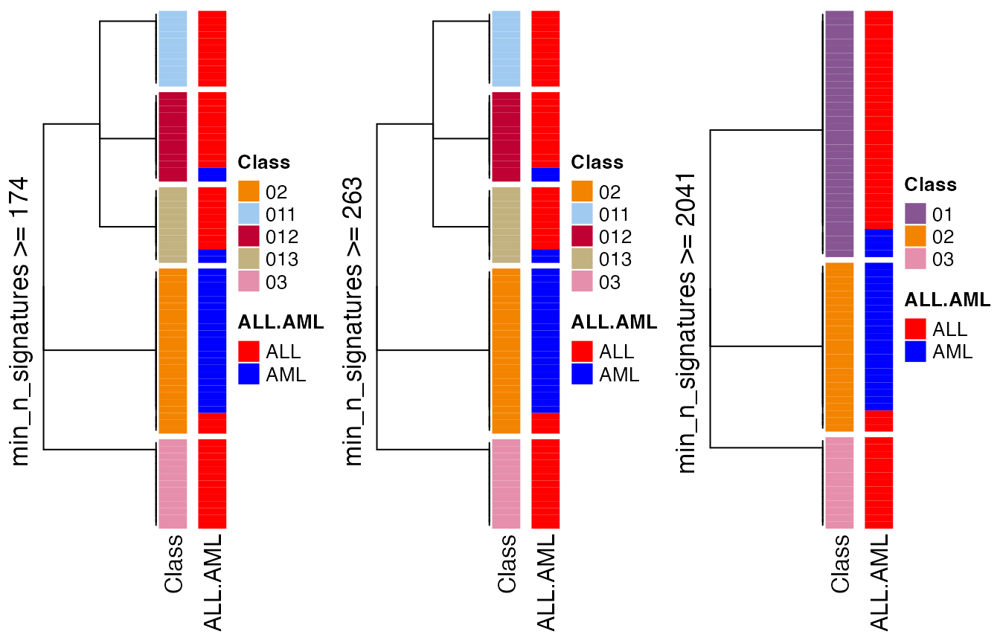
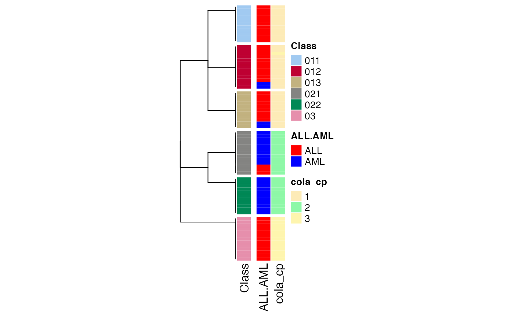
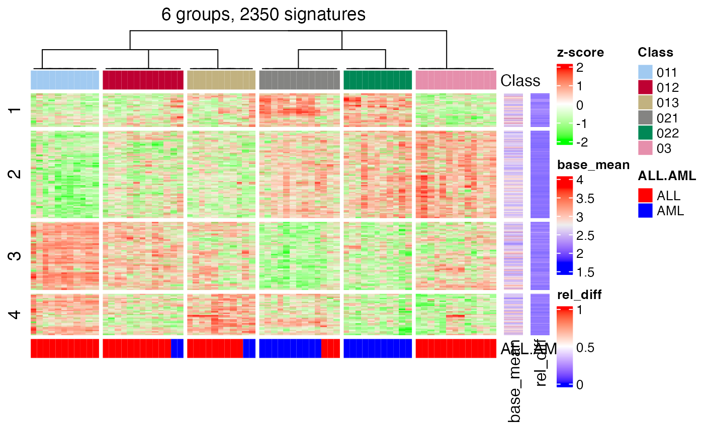
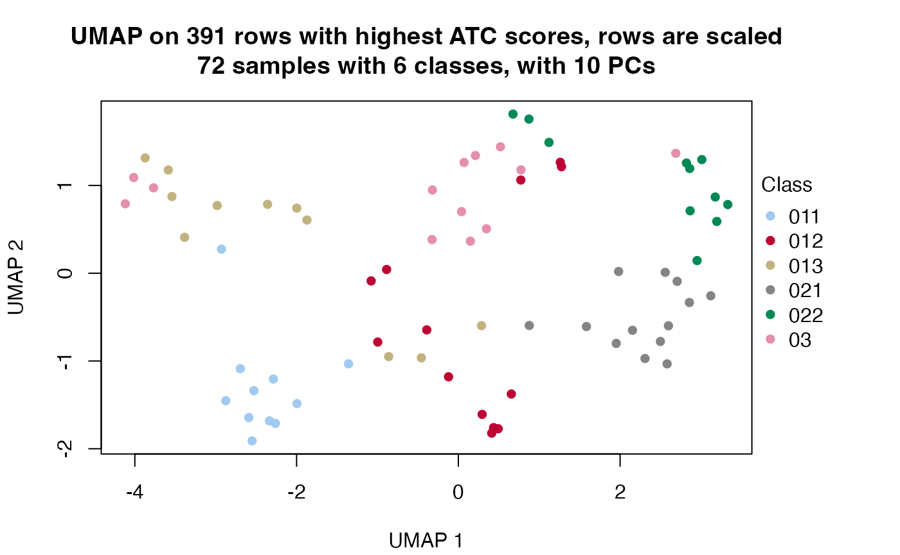
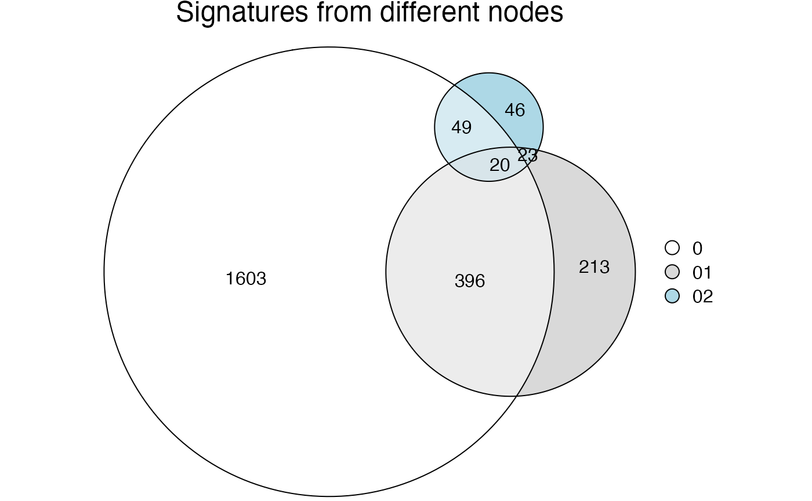

vignettes/hierarchical.Rmd
hierarchical.RmdChoosing the best k (number of partitions) is not an easy problem for consensus partitioning. In consensus partitioning, various metrics based on the consensus matrix are normally calculated, e.g. PAC scores (or 1-PAC) or mean silhouette scores, and the best k is normally selected based on the “extremal method”, i.e. to select the k that corresponds to the highest or lowest values of the metrics. When the number of partitions is small, it is relatively easy to determine the best k with high confidence, while when the real number of clusters gets very large, it is difficult to identify the correct or approximate k for several reasons, some of which we list in the following: 1) Variation in the “big clusters” affect the eCDF of the consensus matrix stronger than variation in the “small clusters”, this can strongly affect PAC scores. 2) Groups showing weaker differences (we can call them secondary groups) are more difficult to separate especially when there are already other groups showing distinct differences (we can call them major groups). 3) The curve of various metrics against k gets flattened for large k and the value of k with the extremal values will be less distinct.
The following four figures illustrate the eCDF curves of a consensus matrix, 1-PAC, mean silhouette and concordance scores for different k where k ranges from 2 to 10 (from the analysis here). Basically, when k >= 5, the eCDF curves have a long plateau with less and less curvature, i.e. they lose their step-like shape, which results in 1-PAC getting almost stable for k >= 5. Also for the curves of mean silhouette and concordance scores against k, they are almost flattened for k >= 3. If using the “extremal method”, k = 6 is taken as the best k because 1-PAC selects k = 9 while mean silhouette and concordance select k = 6.

When inspecting the consensus heatmaps for different k (cf. heatmaps below), actually it is difficult to assess whether the partitioning for k = 6 is better than any other k in [5, 10].

The problems of the “big clusters / small clusters” or “major clusters / secondary clusters” in selecting the best k are mainly due to the consensus partitioning procedure that all samples are taken into account equally. From version 2.0.0, we proposed a new method which tries to solve this issue by applying consensus partitioning in a hierarchical way. Simply speaking, one could first classify the samples into nmajor groups (nmajor is a small number, major clusters), then for each subgroup of samples, one could repeatedly apply consensus clustering. By this means, theoretically, small clusters or secondary clusters could be detected in later steps of the hierarchical procedure.
The figure below illustrates the workflow of the hierarchical consensus partitioning.

The steps are:
The process of the hierarchical consensus partitioning is saved as a dendrogram internally.
In this section, we demonstrate the functionalities of hierarchical consensus partitioning. The design of these new functionalities tries to be as consistent as the functions for normal consensus partitioning in cola, i.e., the function consensus_partition() or run_all_consensus_partition_methods(). Thus, you may find many functions having the same names as the functions for normal consensus partitioning.
The following code applies hierarchical consensus partitioning on the Golub dataset. Function hierarchical_partition() applies the analysis where the main arguments are very similar as in consensus_partition() or run_all_consensus_partition_methods(), which are the input matrix, the sample annotations and the number of cores. The function returns a HierarchicalPartition object.
library(golubEsets) # from Bioconductor
data(Golub_Merge)
m = exprs(Golub_Merge)
colnames(m) = paste0("sample_", colnames(m))
anno = pData(Golub_Merge)
m[m <= 1] = NA
m = log10(m)
m = adjust_matrix(m)
# apply quantile normalization
library(preprocessCore) # from Bioconductor
cn = colnames(m)
rn = rownames(m)
m = normalize.quantiles(m)
colnames(m) = cn
rownames(m) = rn
set.seed(123)
golub_cola_rh = hierarchical_partition(
m, anno = anno[, c("ALL.AML"), drop = FALSE]
)Some important arguments in hierarchical_partition() are listed as follows:
top_n: Number of rows with top values. The value can be a vector of integers. On each node, there is an additional filtering on rows of the submatrices to remove those rows with very small variances, which results in the reducing number of rows in the submatrices. Here top_n can be set as a vector of values less than 1 which are treated as the fraction of rows of every submatrix.top_value_method: A single or a vector of top-value methods.partition_method: A single or a vector of partitioning methods. All combinations of top_value_method and partition_method are tried.combination_method: Instead of specifying top_value_method and partition_method, all methods that are going to be tried can also be specified with combination_method. The value can be a vector in a form of c("SD:hclust", "ATC:skmeans", ...) or a data frame with two columns data.frame(c("SD", "ATC"), c("hclust", "skmeans")).anno: Annotation for the columns. The value can be a vector or a data frame. Note the rows in anno should be corresponded to the matrix columns.anno_col: Colors for annotations. The value should be a list of colors where a named vector for discrete color mapping and a color mapping function generated by circlize::colorRamp2() for continuous color mapping.mean_silhouette_cutoff: Cut off for mean silhouette_cutoff score to decide whether a partition is stable and to be split further more.min_samples: Miminal number of samples to perform partitioning.subset: Number of subset columns to perform partitioning. If the current number of columns in the submatrix is higher than subset, consensus_partition_by_down_sampling() instead of consensus_partition() will be applied. It will be discussed in more details in the Section Work with huge datasets.min_n_signatures: On each node that has a partition, get_signatures() is applied to find the number of signatures under the best k. If the number of signatures is less than min_n_signatures, it means the partitioning might not be significantly different and the hierarchical consensus partitioning stops.min_p_signatures: This is the fraction of signatures to the total number of rows of the original matrix. This filtering is a companion of min_n_signatures.max_k: Maximal number of groups to try for consensus partitioning. Normally this value should be set to a small value, because more subgroups will be found during the hierarchical consensus partitioning process.cores: hierarchical_partition() supports parallel computing. This is the number of cores to use.The object golub_cola_rh is already generated and shipped in cola package, so we directly load it.
data(golub_cola_rh)
golub_cola_rh## A 'HierarchicalPartition' object with 'ATC:skmeans' method.
## On a matrix with 4116 rows and 72 columns.
## Performed in total 1350 partitions.
## There are 6 groups under the following parameters:
## - min_samples: 6
## - mean_silhouette_cutoff: 0.9
## - min_n_signatures: 103 (signatures are selected based on:)
## - fdr_cutoff: 0.05
## - group_diff (scaled values): 0.5
##
## Hierarchy of the partition:
## 0, 72 cols, 2068 signatures
## |-- 01, 35 cols, 652 signatures
## | |-- 011, 11 cols (b)
## | |-- 012, 13 cols, 5 signatures (c)
## | `-- 013, 11 cols (b)
## |-- 02, 24 cols, 138 signatures
## | |-- 021, 13 cols (a)
## | `-- 022, 11 cols (b)
## `-- 03, 13 cols, 7 signatures (c)
## Stop reason:
## a) Mean silhouette score was too small
## b) Subgroup had too few columns.
## c) There were too few signatures.
##
## Following methods can be applied to this 'HierarchicalPartition' object:
## [1] "all_leaves" "all_nodes" "cola_report" "collect_classes"
## [5] "colnames" "compare_signatures" "dimension_reduction" "functional_enrichment"
## [9] "get_anno" "get_anno_col" "get_children_nodes" "get_classes"
## [13] "get_matrix" "get_signatures" "is_leaf_node" "max_depth"
## [17] "merge_node" "ncol" "node_info" "node_level"
## [21] "nrow" "rownames" "show" "split_node"
## [25] "suggest_best_k" "test_to_known_factors" "top_rows_heatmap" "top_rows_overlap"
##
## You can get result for a single node by e.g. object["01"]Directly entering golub_cola_rh prints the hierarchy. As you already see in the previous output, the node in the hierarchy is encoded in a special way. As explained in previous text, on each node, the columns are split into several groups and a digit (the subgroup index in current partitioning) is appended with the current node label to the children node labels. Thus, the length (or nchar) of the label represents the depth of that node in the hierarchy and from the node label, it is also straightforward to infer its parent node. E.g., a node with label 0123 has its parent node 012.
Also you can find the functions that can be applied to the HierarchicalPartition object in previous output.
The first function you may try is to see how the columns are separated and the hierarchy of the subgroups. This can be done by collect_classes() function:
collect_classes(golub_cola_rh)
There are several metrics saved for each node which can be retrieved by node_info().
node_info(golub_cola_rh)## id best_method depth best_k n_columns n_signatures p_signatures is_leaf
## 1 0 ATC:skmeans 1 3 72 2068 0.502429543 FALSE
## 2 01 ATC:skmeans 2 3 35 652 0.158406220 FALSE
## 3 011 not applied 3 NA 11 NA NA TRUE
## 4 012 ATC:skmeans 3 3 13 5 0.001214772 TRUE
## 5 013 not applied 3 NA 11 NA NA TRUE
## 6 02 ATC:skmeans 2 2 24 138 0.033527697 FALSE
## 7 021 ATC:skmeans 3 2 13 NA NA TRUE
## 8 022 not applied 3 NA 11 NA NA TRUE
## 9 03 ATC:skmeans 2 2 13 7 0.001700680 TRUEThere are following columns from node_info():
id: The node id or label.best_method: Because on each node, multiple methods set in combination_method are tried and the method that gives the highest 1-PAC under its best k is finally selected. The best method is saved here.depth: The depth of the node in the hierarchy.best_k: The best k used.n_columns: Number of columns of the submatrix.n_signatures: Number of signatures.p_signatures: Fraction of signatures to the total number of rows of the matrix.is_leaf: Whether the node is a leaf node.These values are useful to merge the children nodes.
Most functions for dealing with the HierarchicalPartition object accept a merge_node argument, where you can set different paremeters to select the children node to merge. These parameters should be set by the function merge_node_param() function. And there are the four parameters can be adjusted:
depthmin_n_signaturesmin_p_signaturesmin_n_signatures measures how much you trust the classification on the bioloigcal point of view. In the following, we demonstrate to manuplate the dendrogram by setting different min_n_signatures values.
collect_classes(golub_cola_rh, merge_node = merge_node_param(min_n_signatures = 174))
collect_classes(golub_cola_rh, merge_node = merge_node_param(min_n_signatures = 263))
collect_classes(golub_cola_rh, merge_node = merge_node_param(min_n_signatures = 2041))
We can also compare to the normal consensus partitioning classification:
data(golub_cola)
golub_cola_cp = golub_cola["ATC:skmeans"]
collect_classes(golub_cola_rh,
anno = cbind(get_anno(golub_cola_rh),
cola_cp = factor(get_classes(golub_cola_cp, k = suggest_best_k(golub_cola_cp))[, "class"])),
anno_col = c(get_anno_col(golub_cola_rh))
)
get_classes() returns the subgroups of columns:
get_classes(golub_cola_rh)## sample_39 sample_40 sample_42 sample_47 sample_48 sample_49 sample_41 sample_43 sample_44 sample_45
## "03" "03" "013" "012" "011" "03" "011" "012" "012" "012"
## sample_46 sample_70 sample_71 sample_72 sample_68 sample_69 sample_67 sample_55 sample_56 sample_59
## "012" "012" "013" "013" "011" "011" "013" "03" "03" "012"
## sample_52 sample_53 sample_51 sample_50 sample_54 sample_57 sample_58 sample_60 sample_61 sample_65
## "022" "021" "021" "021" "012" "022" "022" "012" "022" "022"
## sample_66 sample_63 sample_64 sample_62 sample_1 sample_2 sample_3 sample_4 sample_5 sample_6
## "013" "022" "022" "022" "03" "013" "03" "03" "011" "03"
## sample_7 sample_8 sample_9 sample_10 sample_11 sample_12 sample_13 sample_14 sample_15 sample_16
## "03" "03" "013" "013" "013" "021" "011" "013" "011" "012"
## sample_17 sample_18 sample_19 sample_20 sample_21 sample_22 sample_23 sample_24 sample_25 sample_26
## "011" "012" "012" "011" "011" "021" "03" "011" "021" "012"
## sample_27 sample_34 sample_35 sample_36 sample_37 sample_38 sample_28 sample_29 sample_30 sample_31
## "03" "022" "022" "021" "021" "021" "021" "013" "021" "022"
## sample_32 sample_33
## "021" "021"Also you can control merge_node argument to decide on which level of hierarchy you want.
get_classes(golub_cola_rh, merge_node = merge_node_param(min_n_signatures = 263))## sample_39 sample_40 sample_42 sample_47 sample_48 sample_49 sample_41 sample_43 sample_44 sample_45
## "03" "03" "013" "012" "011" "03" "011" "012" "012" "012"
## sample_46 sample_70 sample_71 sample_72 sample_68 sample_69 sample_67 sample_55 sample_56 sample_59
## "012" "012" "013" "013" "011" "011" "013" "03" "03" "012"
## sample_52 sample_53 sample_51 sample_50 sample_54 sample_57 sample_58 sample_60 sample_61 sample_65
## "02" "02" "02" "02" "012" "02" "02" "012" "02" "02"
## sample_66 sample_63 sample_64 sample_62 sample_1 sample_2 sample_3 sample_4 sample_5 sample_6
## "013" "02" "02" "02" "03" "013" "03" "03" "011" "03"
## sample_7 sample_8 sample_9 sample_10 sample_11 sample_12 sample_13 sample_14 sample_15 sample_16
## "03" "03" "013" "013" "013" "02" "011" "013" "011" "012"
## sample_17 sample_18 sample_19 sample_20 sample_21 sample_22 sample_23 sample_24 sample_25 sample_26
## "011" "012" "012" "011" "011" "02" "03" "011" "02" "012"
## sample_27 sample_34 sample_35 sample_36 sample_37 sample_38 sample_28 sample_29 sample_30 sample_31
## "03" "02" "02" "02" "02" "02" "02" "013" "02" "02"
## sample_32 sample_33
## "02" "02"suggest_best_k() extracts the the best k as well as related metrics for the best partitions on each node.
suggest_best_k(golub_cola_rh)## node best_method is_leaf best_k 1-PAC mean_silhouette concordance n_sample
## 0 ATC:skmeans 3 1.000 0.964 0.984 72 **
## 01 ATC:skmeans 3 1.000 0.951 0.982 35 **
## 011 not applied ✓(b) NA NA NA NA 11
## 012 ATC:skmeans ✓(c) 3 1.000 0.987 0.994 13 **
## 013 not applied ✓(b) NA NA NA NA 11
## 02 ATC:skmeans 4 0.913 0.901 0.944 24 *
## 021 ATC:skmeans ✓(a) 2 0.846 0.898 0.965 13
## 022 not applied ✓(b) NA NA NA NA 11
## 03 ATC:skmeans ✓(c) 2 0.705 0.932 0.971 13
## ---------------------------------------------------------------------------
## Stop reason:
## a) Mean silhouette score was too small
## b) Subgroup had too few columns.
## c) There were too few signatures.Another important function which gives a direct feeling of how the subgrouping look like is to check the signatures that are significantly different between subgroups. Similarly as normal consensus partitioning, we can use get_signatures() here. The function basically applies get_signatures,ConsesusPartition-method() on the partition on every node and collect all the signatures as the signatures of the hierarchical consensus partitioning.
get_signatures(golub_cola_rh, verbose = FALSE)
Other useful functions are dimension_reduction(), compare_signatures() and test_to_known_factors(). The usages are as follows:
dimension_reduction(golub_cola_rh)## use UMAP
compare_signatures(golub_cola_rh)
test_to_known_factors(golub_cola_rh)## ALL.AML
## class 5.33797e-09Note all these functions mentioned above allow the merge_node argument to adjust the hierarchy.
One of the key advantage of cola package is it automates the complete analysis. There is also a cola_report() function for HierarchicalPartition class and it automates the complete analysis as well. Simply run:
rh = hierarchical_partition(...)
cola_report(rh, output_dir = ...)In the vignette “Work with Big Datasets”, we introduced a DownSamplingConsensusPartition class and its corresponding method consensus_partition_by_down_sampling() which performs consensus partitioning on a randomly sampled subset of columns and predict the subgroup labels for the remaining columns from the … Here hierarchical_partition() also supports down sampling which makes it possible to work on extremly large datasets.
The only thing for dealing with huge datasets is to set the subset argument.
hierarchical_partition(..., subset = ...)On each node, to consider the euqal sizes of groups, we first perform a fast k-means and random sample columns with different weight according to the size the groups.
## R version 4.3.1 (2023-06-16)
## Platform: x86_64-apple-darwin20 (64-bit)
## Running under: macOS Ventura 13.2.1
##
## Matrix products: default
## BLAS: /Library/Frameworks/R.framework/Versions/4.3-x86_64/Resources/lib/libRblas.0.dylib
## LAPACK: /Library/Frameworks/R.framework/Versions/4.3-x86_64/Resources/lib/libRlapack.dylib; LAPACK version 3.11.0
##
## Random number generation:
## RNG: L'Ecuyer-CMRG
## Normal: Inversion
## Sample: Rejection
##
## locale:
## [1] C/UTF-8/C/C/C/C
##
## time zone: Europe/Berlin
## tzcode source: internal
##
## attached base packages:
## [1] grid stats graphics grDevices utils datasets methods base
##
## other attached packages:
## [1] cola_2.9.1 circlize_0.4.15 ComplexHeatmap_2.18.0 knitr_1.44
## [5] markdown_1.10
##
## loaded via a namespace (and not attached):
## [1] bitops_1.0-7 DBI_1.1.3 gridExtra_2.3
## [4] rlang_1.1.2 magrittr_2.0.3 clue_0.3-65
## [7] GetoptLong_1.0.5 matrixStats_1.2.0 compiler_4.3.1
## [10] RSQLite_2.3.1 skmeans_0.2-16 polylabelr_0.2.0
## [13] png_0.1-8 systemfonts_1.0.5 vctrs_0.6.4
## [16] stringr_1.5.0 pkgconfig_2.0.3 shape_1.4.6
## [19] crayon_1.5.2 fastmap_1.1.1 XVector_0.40.0
## [22] magick_2.8.0 utf8_1.2.3 rmarkdown_2.25
## [25] ragg_1.2.6 purrr_1.0.2 bit_4.0.5
## [28] xfun_0.40 zlibbioc_1.46.0 cachem_1.0.8
## [31] GenomeInfoDb_1.36.4 jsonlite_1.8.8 blob_1.2.4
## [34] irlba_2.3.5.1 parallel_4.3.1 data.tree_1.1.0
## [37] cluster_2.1.4 R6_2.5.1 bslib_0.6.1
## [40] stringi_1.7.12 RColorBrewer_1.1-3 reticulate_1.34.0
## [43] genefilter_1.82.1 jquerylib_0.1.4 Rcpp_1.0.11
## [46] iterators_1.0.14 IRanges_2.36.0 splines_4.3.1
## [49] Matrix_1.6-1.1 tidyselect_1.2.0 yaml_2.3.7
## [52] viridis_0.6.4 doParallel_1.0.17 codetools_0.2-19
## [55] doRNG_1.8.6 lattice_0.21-9 tibble_3.2.1
## [58] Biobase_2.60.0 KEGGREST_1.40.1 askpass_1.2.0
## [61] evaluate_0.22 survival_3.5-8 desc_1.4.2
## [64] polyclip_1.10-6 xml2_1.3.6 mclust_6.0.0
## [67] Biostrings_2.68.1 pillar_1.9.0 MatrixGenerics_1.12.3
## [70] rngtools_1.5.2 foreach_1.5.2 stats4_4.3.1
## [73] generics_0.1.3 RCurl_1.98-1.12 rprojroot_2.0.3
## [76] S4Vectors_0.40.2 ggplot2_3.4.4 munsell_0.5.0
## [79] scales_1.2.1 xtable_1.8-4 glue_1.6.2
## [82] slam_0.1-50 tools_4.3.1 dendextend_1.17.1
## [85] RSpectra_0.16-1 annotate_1.78.0 fs_1.6.3
## [88] XML_3.99-0.14 Cairo_1.6-2 impute_1.74.1
## [91] umap_0.2.10.0 AnnotationDbi_1.62.2 colorspace_2.1-0
## [94] GenomeInfoDbData_1.2.10 cli_3.6.2 brew_1.0-8
## [97] textshaping_0.3.7 fansi_1.0.5 eulerr_7.0.0
## [100] viridisLite_0.4.2 dplyr_1.1.3 gtable_0.3.4
## [103] sass_0.4.8 digest_0.6.33 BiocGenerics_0.48.1
## [106] rjson_0.2.21 memoise_2.0.1 htmltools_0.5.7
## [109] pkgdown_2.0.7 lifecycle_1.0.4 httr_1.4.7
## [112] GlobalOptions_0.1.2 openssl_2.1.1 microbenchmark_1.4.10
## [115] bit64_4.0.5